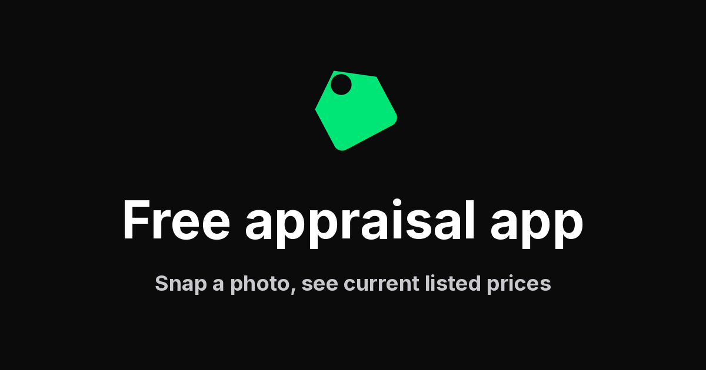

A free appraisal app gives you a quick, no-cost estimate of what an item is worth from a photo. You snap the item, the app works out what it is, then it checks current listings and specialist data for that exact thing and shows you a range and an estimated sale price. It is not a certified appraisal for insurance or tax. A good app should say so plainly, and should tell you when you need a person instead.
Most of the time, what people actually want to know is simpler than a formal valuation: is this worth anything, and roughly how much? That is what a free appraisal app is for.  How Much Is It Worth: Scanner does this on iPhone, and there is one free scan on the website with no download.
How Much Is It Worth: Scanner does this on iPhone, and there is one free scan on the website with no download.
People use "appraisal" for two very different things, and mixing them up costs money.
| Free appraisal app | Certified appraisal | |
|---|---|---|
| What you get | An estimate from current listings and comparable data | A signed written report from a qualified appraiser |
| Speed | Seconds | Days to weeks |
| Cost | Free to start | A fee, usually hourly or per item |
| Who looks at it | Software, using your photos | A person, usually in hand |
| Good for | Deciding whether to sell, keep, list, or get a pro to look | Insurance, estates, divorce, donations, legal disputes |
| Accepted by insurers and the tax office | No | Yes, when done properly |
When a number needs to stand up on paper, you need a person. When you just need to know what you are dealing with, an app is faster and costs nothing to start.
If there are not enough listings to back a range, the result says so and is labelled a rough estimate. That is the honest answer. An app that gives you a precise figure with nothing behind it is making it up.
Want to try it? Start your free 3-day trial in the iPhone app at https://apps.apple.com/app/id6832980231. You get one free scan on the website at https://howmuchisitworth.today/free-appraisal-app. On Android? Check https://howmuchisitworth.today/ for the Android release.
Appraisers work with different kinds of value, and they are not interchangeable.
So an insurance valuation and a buyer's offer can be far apart and both be honest. They are answering different questions.
Works well: coins, banknotes, trading cards, bullion, branded watches, consoles, phones, Lego, toys, vinyl, sneakers, and designer bags. These have clear identifiers and plenty of listings.
Use with care: antiques, furniture, pottery, glass, costume jewellery, and unsigned art. Photos only go so far here, but a scan can still tell you whether similar pieces sell for small change or serious money, which is the call that decides whether an appraiser is worth paying.
Get a professional: fine art, rare antiques, diamonds and gemstones, firearms, anything you are insuring, or anything that may be worth five figures.
They sound similar. A barcode price checker tells you what a packaged product costs in shops. An appraisal app tells you what something you already own is worth to a buyer. Different question. A photo appraisal app does not read barcodes.
If the scan says it could be valuable, look for an appraiser who belongs to a recognised professional body and specialises in your kind of item. A reputable appraiser charges a flat or hourly fee. Be wary of anyone who wants a percentage of the item's value, and be careful when the person valuing the item also offers to buy it.
In the app, scans save to a history and collections, and you can draft a listing for eBay, Facebook Marketplace, or Gumtree from the scan when you decide to sell.
The app is free to download. Start your free 3-day trial to scan in the app, or use one free scan on the website.
If you want a free estimate on something you own, start at https://howmuchisitworth.today/free-appraisal-app, or download the app and Start your free 3-day trial.